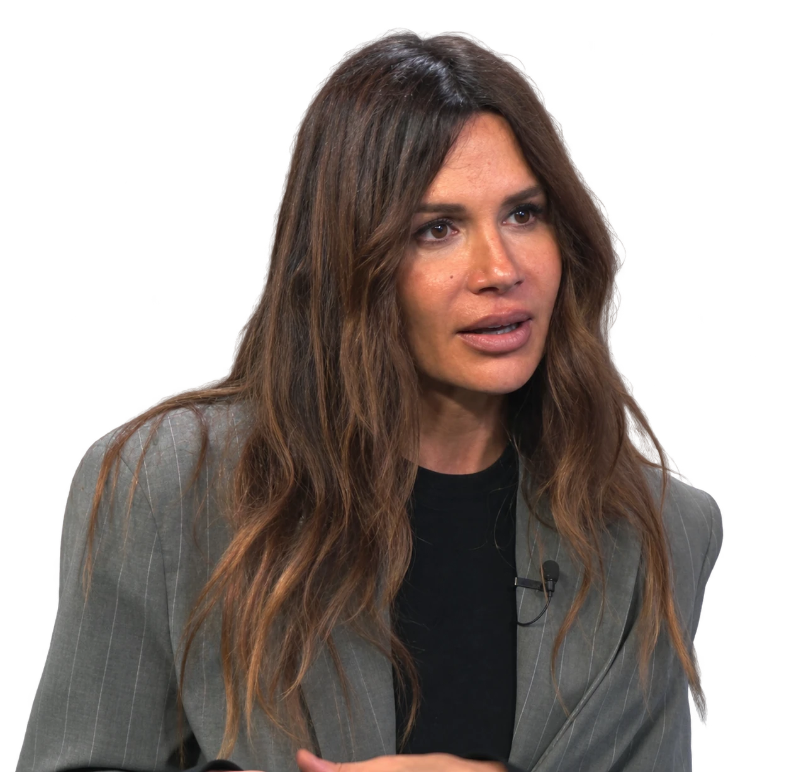
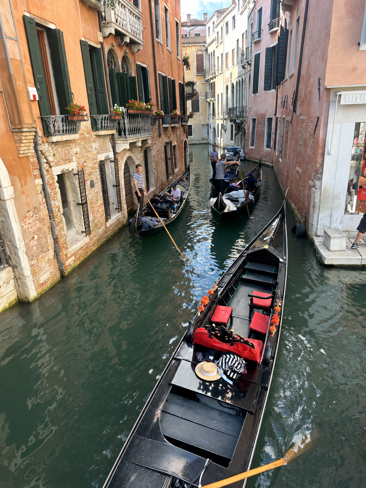
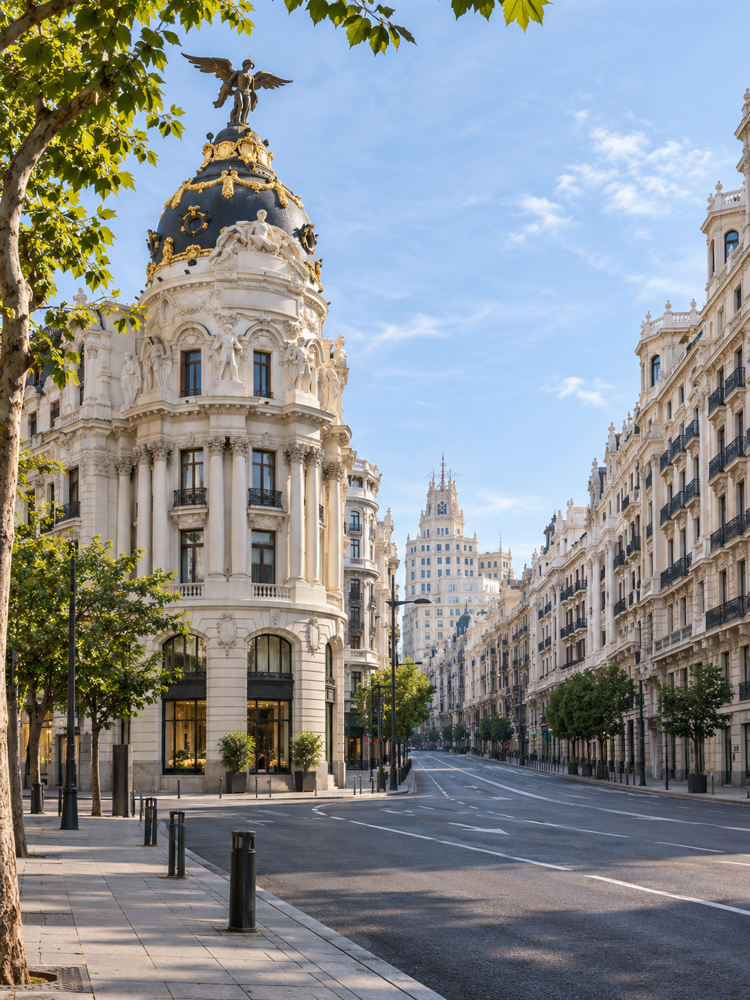
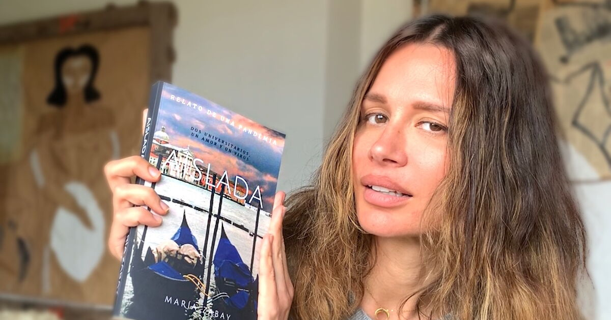
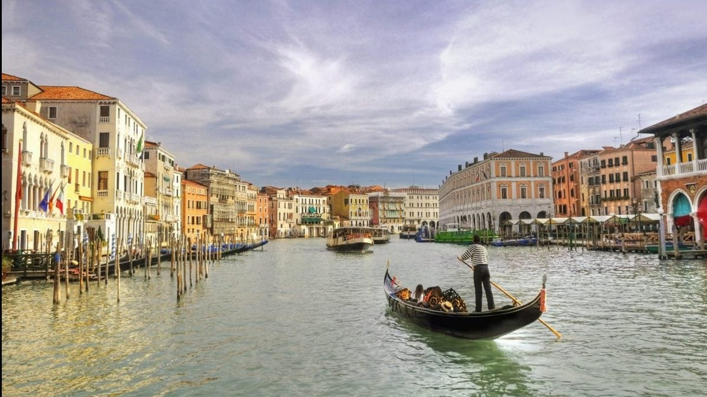
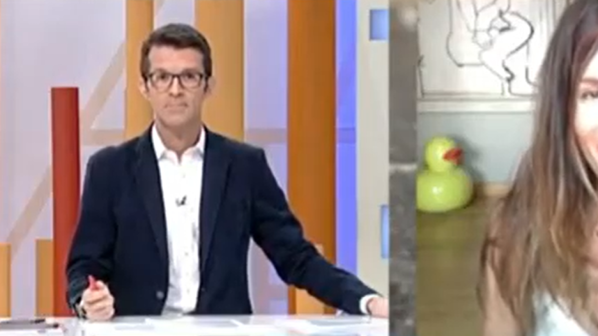
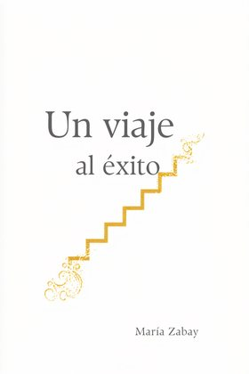
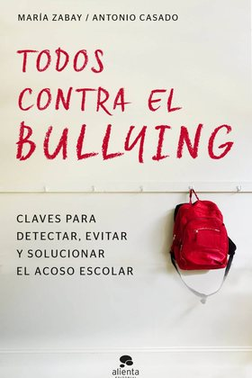

Madrid, 29 de marzo de 2020.
El virus nos infecta. La pandemia nos consume.
Mi alma, sin embargo, late aún, incorrupta, anclada a ese amor que no sabe morir.
Jimmy

Él se marcha cuatro días. Ella se queda en Venecia. ¿Y si volver a abrazarse dejara de depender de ellos?
Dos ciudades. Dos fechas. Dos voces que buscan encontrarse.
El virus nos infecta. La pandemia nos consume.
Mi alma, sin embargo, late aún, incorrupta, anclada a ese amor que no sabe morir.
Jimmy
Los días se arrastran como espectros. Nunca he sentido la soledad tan cerca, tan densa, tan invencible. Venecia es ahora una prisión de mármol y silencio.
Lo que empezó como una gripe anecdótica ha alcanzado su plenitud aniquiladora. El mundo entero está paralizado.
Mi móvil ha muerto. Yo casi también. Escribo estas líneas con la poca energía que me queda, como quien lanza un mensaje a una botella que no espera que nadie recoja.
¿Lo leerás tú? ¿O quedará abandonado en este papel arrugado que he suplicado a la auxiliar?
Te quiero. ¿Te lo volveré a decir comiéndote los labios? Ojalá...
Olivia
Antes de estas palabras, hubo una promesa de volver en cuatro días. ¿Qué ocurrió entre aquel viaje y estas líneas?
Un viaje de vuelta a Madrid. Una promesa de regresar. Y, de pronto, un mundo que empieza a cerrar sus puertas.
Olivia y Jimmy son dos universitarios madrileños que viven su Erasmus en Venecia. Comparten residencia, planes, discusiones y esa certeza de que todavía les queda todo por delante. Hasta que Jimmy vuelve a casa para celebrar el cumpleaños de su madre.
La estancia iba a durar cuatro días. Pero Olivia empieza a encontrarse mal en Italia. Mientras ella queda aislada, él busca una manera de regresar o de traerla de vuelta. Cada llamada abre una posibilidad. Cada noticia puede cerrarla.
Su familia tiene contactos, recursos y la costumbre de encontrar soluciones. Esta vez, ni el dinero ni las buenas intenciones bastan para controlar lo que ocurre. Jimmy quiere actuar. Quienes lo quieren le piden que espere. Y Olivia, tan acostumbrada a defender su libertad, tiene cada vez menos margen para decidir.
Aislada es también una novela de suspense y la crónica del avance de una pandemia que se cobra cada vez más vidas. El relato sigue las medidas que se van tomando, las respuestas que llegan tarde y la distancia entre los anuncios públicos y lo que viven quienes esperan ayuda.
En su trama, la corrupción política, los intereses económicos y las intrigas alrededor de las decisiones y los suministros alimentan una pregunta incómoda: ¿qué ocurre cuando quienes deberían frenar la catástrofe contribuyen a agravarla? La búsqueda de Jimmy se cruza con ese entramado de información, sospechas y poder.
El amor, el drama y el suspense se entrelazan: mientras dos jóvenes intentan reunirse, el lector asiste a una crisis colectiva en la que cada decisión puede cambiar el destino de muchas personas.
Descubrir Aislada en AmazonEntre los canales de Cannaregio y una casa familiar de Madrid, la novela sigue el paso de los días, las conversaciones que cambian de tono y la espera de un mensaje. La ciudad de los encuentros se convierte en un lugar de aislamiento. El teléfono, en una forma precaria de estar juntos.
Olivia es inconformista, irónica y apasionada por las causas en las que cree. Jimmy la quiere cerca, pero el amor no lo libra de los celos ni del miedo. La llegada de alguien que despierta el interés intelectual de ella ya ha rozado sus inseguridades. Ahora deberán afrontar una distancia para la que ninguno estaba preparado.
Las noticias y las conversaciones marcan el paso de la crisis: restricciones, fronteras, protocolos y problemas de abastecimiento. En la trama, los contactos del entorno de Jimmy lo acercan a decisiones opacas y conflictos de intereses. Cada información puede ofrecer una salida o abrir una intriga más.
La novela entrelaza así la separación de la pareja con el suspense político y social: quién decide, qué intereses pesan y qué consecuencias tienen esas decisiones para quienes no pueden esperar.
¿Cuándo proteger a quien amas empieza a parecerse a decidir por él?
¿A quién crees cuando cada noticia cambia lo que dabas por seguro?
Volver en unos días parecía lo más sencillo del mundo.
Al otro lado de la línea, alguien que necesita tenerte cerca.
Decisiones, intereses y corrupción política en una crisis que sigue avanzando.
Olivia tiene mucho que decir sobre el mundo que se está deteniendo.

Los canales de Cannaregio, la residencia universitaria de los Gesuiti, los trayectos en vaporetto y las clases en Ca’ Foscari forman parte de la vida que Olivia y Jimmy comparten en Italia. Venecia es deseo, descubrimiento y la ilusión de tener tiempo para todo.
Con la expansión del virus, sus recorridos familiares adquieren otro significado. Los planes se aplazan, los movimientos se restringen y la ciudad se convierte en el escenario de una espera que nadie sabe medir.
La belleza sigue ahí. Lo que cambia es la posibilidad de vivirla juntos.

Madrid es la ciudad de origen de Olivia y Jimmy. Allí están sus familias, sus amigos y los recuerdos de una relación que comenzó antes del Erasmus. Jimmy regresa para celebrar el cumpleaños de Carmela, su madre. Solo iban a ser cuatro días.
En casa lo esperan Paco, un padre empresario acostumbrado a resolver problemas, y una familia que quiere protegerlo. Pero lo que para unos es prudencia, para Jimmy empieza a ser una barrera entre él y Olivia.
Mientras busca una salida, las conversaciones con amigos y contactos lo acercan a noticias, filtraciones y sospechas. Madrid es el lugar desde el que intenta actuar y donde descubre los límites de aquello que creía poder controlar.
Madrileña, universitaria y de Erasmus en Venecia, Olivia mezcla la ironía y el afecto con una fuerte necesidad de cuestionarlo todo. Le preocupan el medioambiente, la libertad y una sociedad que, a su juicio, confunde lo importante con lo que puede exhibirse.
Quiere a Jimmy, disfruta provocándolo y no acepta que sus celos decidan por ella. Una conversación con Carlos, un investigador al que le interesan sus ideas, deja ver que también necesita que la escuchen fuera de la pareja.
Cuando Jimmy vuelve a Madrid y ella empieza a encontrarse mal, su independencia se enfrenta a una situación que no puede gobernar. Entre mensajes y pensamientos escritos, su voz sostiene una pregunta que recorre la novela: ¿qué merece de verdad nuestra atención?
Jimmy —Jaime para su familia— es un universitario madrileño de veintiún años. Vive su Erasmus con Olivia, se ríe con ella y quiere prolongar esa vida juntos. También es celoso, impulsivo y vulnerable cuando siente que puede perder su lugar a su lado.
La vuelta a Madrid para el cumpleaños de su madre parecía una pausa breve. Cuando Olivia enferma en Venecia, su deseo de regresar choca con la cautela de su padre, los protocolos y una crisis que se agrava cada día.
Jimmy busca ayuda entre su familia, sus amigos y sus contactos. Quiere hacer algo, pero cada camino tiene consecuencias. Su conflicto no es solo cómo llegar hasta Olivia: también debe decidir cuánto está dispuesto a arriesgar y a quién va a escuchar.
Alrededor de Jimmy hay una familia, amistades y contactos capaces de abrir puertas. La crisis pondrá a prueba el alcance de esa influencia.
Empresario hecho a sí mismo, Paco está acostumbrado a encontrar soluciones y a moverse entre contactos. Quiere traer a Olivia de vuelta y mantener a su hijo a salvo. Jimmy quiere ir a buscarla. El afecto que los une no evita que entren en conflicto.
¿Quién decide qué riesgo puede asumir alguien a quien ama?
Gonzalo es el hermano mayor de Nacho y un ejecutivo de la farmacéutica familiar, implicado en su expansión en China y Estados Unidos. Recibe a Jimmy con medidas de protección que lo inquietan. Su cautela y las conversaciones que mantienen alimentan nuevas preguntas sobre la crisis.
¿Cómo cambia tu miedo cuando escuchas a alguien que parece saber más?
Amigo de Jimmy e hijo de una familia del sector farmacéutico, Nacho vive entre el ocio y una comodidad que parece inalterable. Cuando Jimmy necesita ayuda, lo acompaña a ver a su hermano Gonzalo. El vínculo de siempre lo acerca a un mundo que empieza a mirar con otros ojos.
Amigo de Paco y dueño de una de las principales distribuidoras, José María le habla de las dificultades para conseguir y hacer llegar material sanitario. Sus conversaciones trasladan la tensión de la crisis a los pedidos, los plazos y las decisiones que se toman lejos de quienes esperan ayuda.
¿Qué ocurre cuando tener los recursos no basta para hacerlos llegar?
¿Qué queda de nuestras prioridades cuando ya no podemos vivir como antes? La voz inconformista de Olivia pone esa pregunta sobre la mesa.
El vídeo comienza sin sonido. Activa el audio desde los controles del reproductor.





Aislada

Manhattan

Diosas de papel

Breve historia de la especie humana

Un viaje al éxito

Liderar con la palabra

Todos contra el bullying

El zapato de la lengua rota
«Con una prosa que fluye como el mejor diálogo de una serie, Valentina —valiente, imperfecta y profundamente humana— nos hace reír, suspirar y emocionarnos»
Carmen Posadas
«Una mirada crítica que combina irreverencia y profundidad. Una voz potente y fresca en la narrativa contemporánea»
El Español
«Pícara, desvergonzada, Valentina se inscribe en la tradición erótica que los autores licenciosos del siglo XVIII calificaban con el eufemismo de “novela filosófica”»
Arturo Pérez-Reverte
«María Zabay es una de esas mentes inquietas que no se conforman con observar la realidad, necesitan diseccionarla»
El Nuevo Digital
«Alonso Vega es un personaje que irrita, divierte y fascina por igual. Una novela feroz, imposible de dejar»
Luis Alberto de Cuenca · Sobre Miseria
«Una novela impactante, sorprenderá»
Julia Navarro · Sobre Miseria